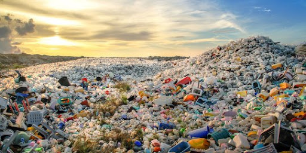
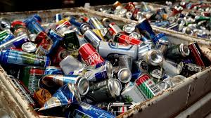
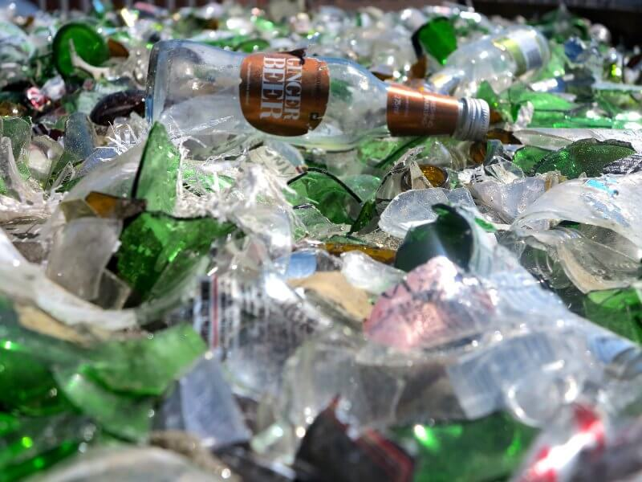
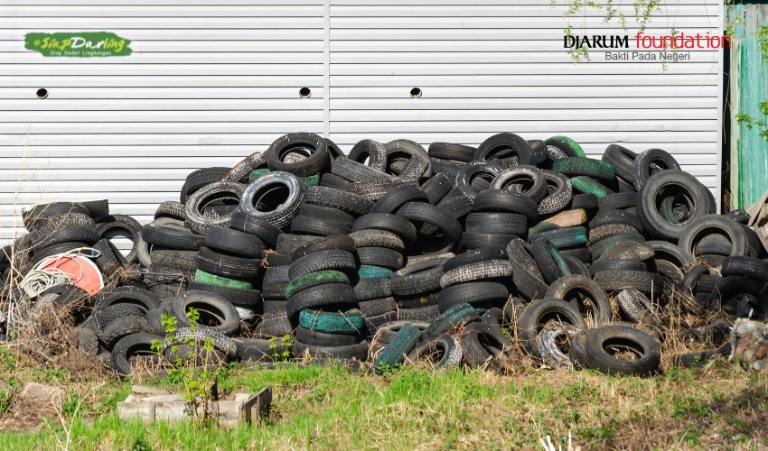
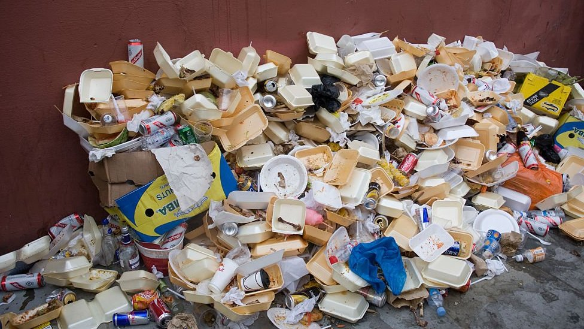
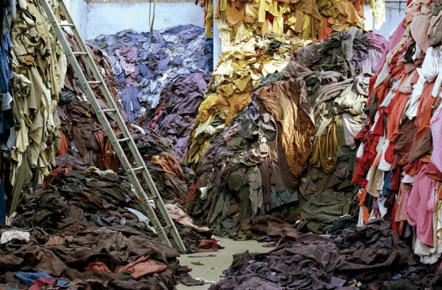
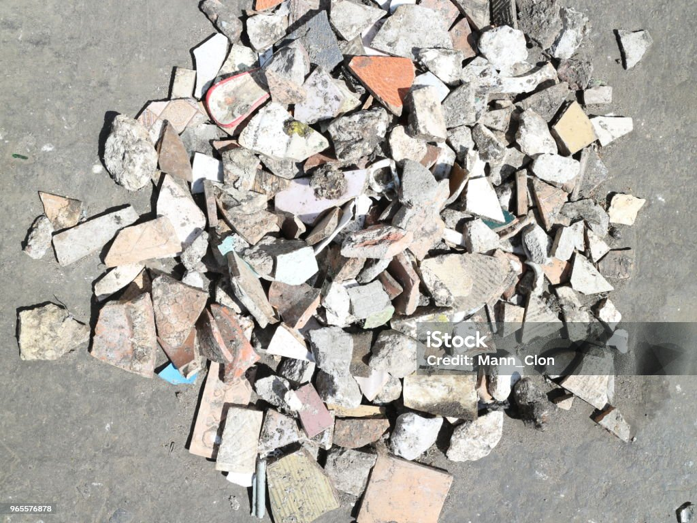

Yang tergolong
Yang tergolong sampah plastik antara lain:
Botol plastik (air mineral, soda)
Kantong plastik
Pembungkus makanan daging
Sedotan
Gelas plastik sekali pakai

Yang tergolong
Yang tergolong sampah Logam antara lain :
Kaleng minuman (soda,jus)
Kaleng makanan(sarden,kornet)
Aluminium foil
Potongan besi atau logam

Yang tergolong
Berbagai jenis sampah kaca seperti
Botol kaca
Pecahan kaca
Gelas dan piring kaca
Cermin

Yang tergolong
jenis-jenis sampah Karet adalah :
Ban bekas
Sisa karet gelang
Sol sepatu

Yang tergolong
Yang tergolong sampah Styrofoam adalah
Wadah makanan styrofoam
Pengemasan elektronik

Yang tergolong
Beragai sampah yang tergolong ke Tekstil sintesis adalah
Kain nilon atau poliester
Pakaian yang terbuat dari bahan sintetis (seperti polyester)

Yang tergolong
Berbagai jenis sampah keramik adalah
Pecahan keramik (piring, cangkir)
Ubin bekas
